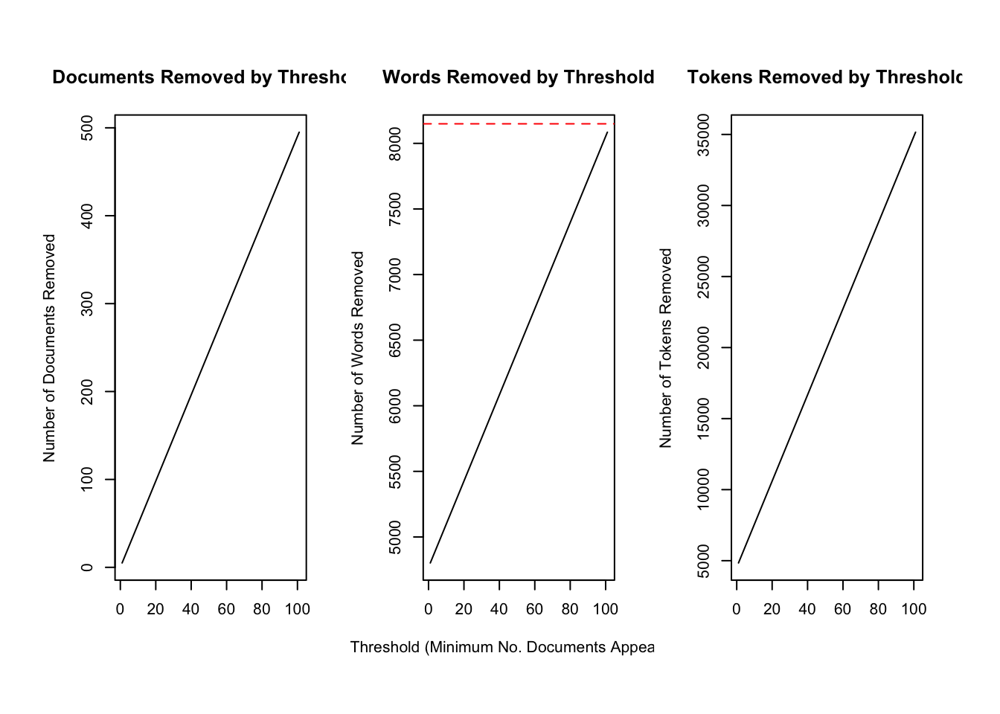
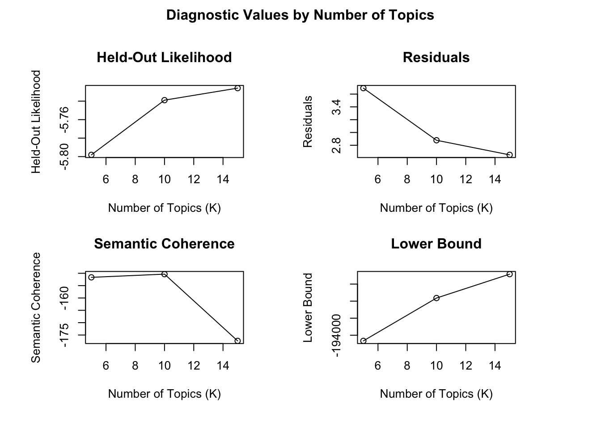
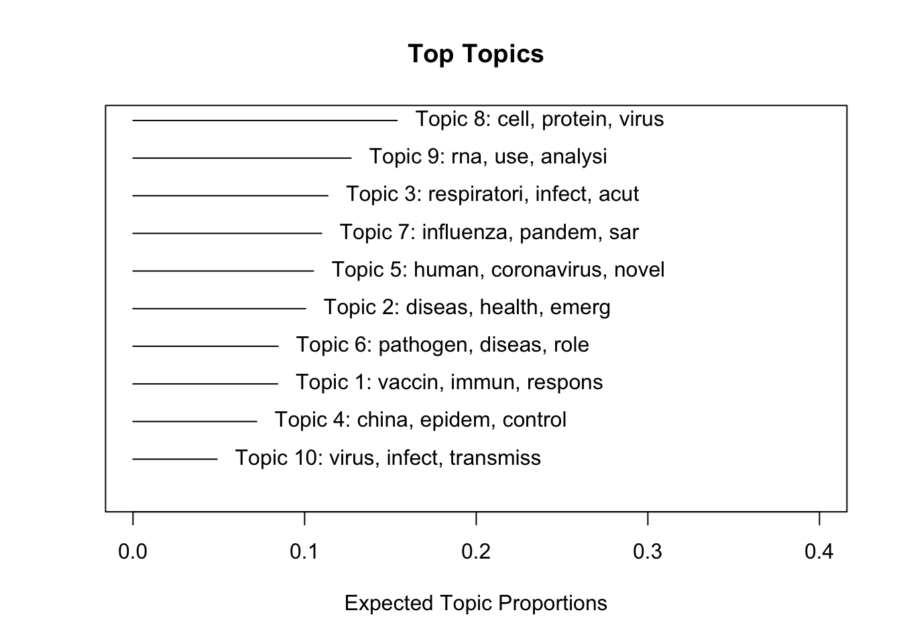
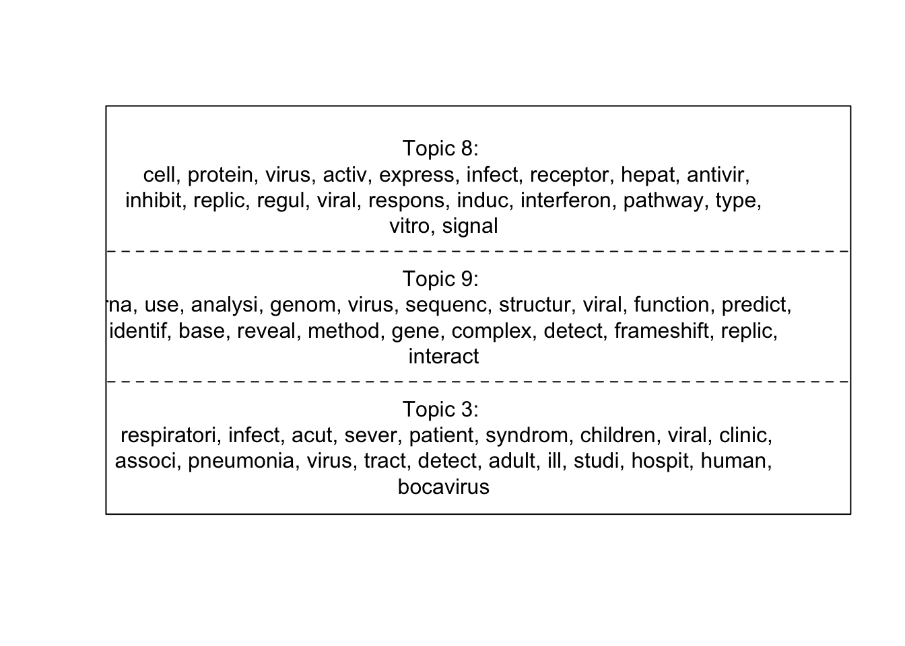
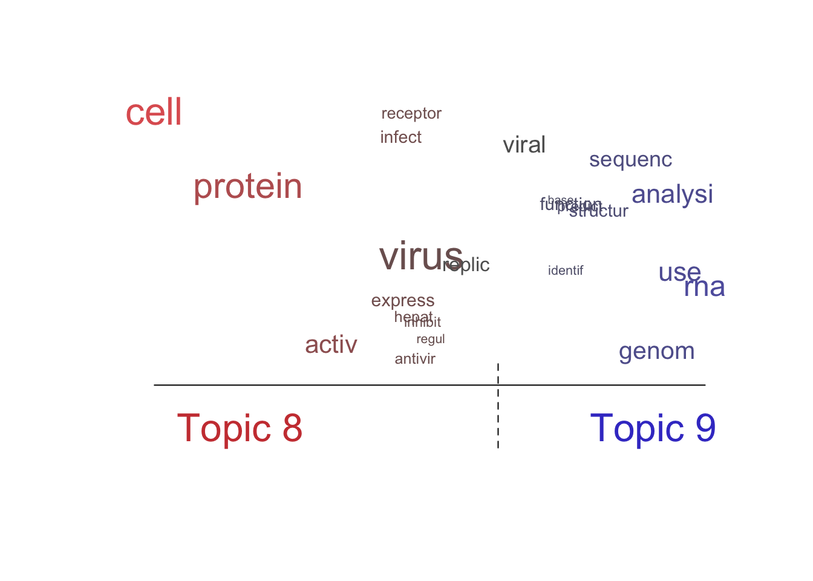

library(tidyverse)
library(stm)
library(tm)
library(topicmodels)
library(wordcloud)
library(tidytext)COVID Titles: Topic Modeling
Read in the data and take a random sample (just using a subset as instructed):
dat <- read_csv("COVIDarticletitles.csv")
set.seed(030824)
short_dat <- sample_n(dat, 1000)Structural Topic Modeling
Preprocess the data by removing stop words, numbers, punctuation, and by stemming words:
processed <- textProcessor(dat$title,
metadata = dat,
removestopwords = TRUE,
removenumbers = FALSE,
removepunctuation = TRUE,
stem = TRUE)Building corpus...
Converting to Lower Case...
Removing punctuation...
Removing stopwords...
Stemming...
Creating Output... Preparing documents for STM analyses:
out <- prepDocuments(processed$documents,
processed$vocab,
processed$meta)Removing 4802 of 8149 terms (4802 of 48665 tokens) due to frequency
Removing 5 Documents with No Words
Your corpus now has 5248 documents, 3347 terms and 43863 tokens.docs <- out$documents
vocab <- out$vocab
meta <- out$metaThis code is from the stm package vignette article to see how many words are removed by setting threshold thresholds in prepDocuments(). Then setting the lower threshold to 10:
plotRemoved(processed$documents, lower.thresh = seq(1, 200, by = 100))
out <- prepDocuments(processed$documents,
processed$vocab,
processed$meta,
lower.thresh = 10)Removing 7365 of 8149 terms (14735 of 48665 tokens) due to frequency
Removing 30 Documents with No Words
Your corpus now has 5223 documents, 784 terms and 33930 tokens.docs <- out$documents
vocab <- out$vocab
meta <- out$metaFirst selecting k by using searchK() to get diagnostics for different models run using different k. I need to study more about what the different diagnostics mean:
#fit stm
set.seed(030424)
#select k
# diagnostic values with models for different k
# just picking 3 k values to make things faster- how do choose them?
system.time(
storage <- searchK(out$documents,
out$vocab,
K = c(5, 10, 15),
data = meta,
init.type = "Spectral",
verbose = FALSE)
) user system elapsed
97.393 1.800 118.783 plot(storage)
Fitting stm with 10 topics and plotting results to explore:
mod <- stm(documents = out$documents,
vocab = out$vocab,
K = 10,
data = out$meta,
init.type = "Spectral",
verbose = FALSE)
summary(mod)A topic model with 10 topics, 5223 documents and a 784 word dictionary.Topic 1 Top Words:
Highest Prob: vaccin, immun, respons, virus, mice, protect, recombin
FREX: vaccin, mice, immun, therapeut, protect, antigen, recombin
Lift: nanoparticl, adjuv, elicit, immunogen, lethal, primat, hemagglutinin
Score: nanoparticl, vaccin, immun, mice, protect, therapeut, antigen
Topic 2 Top Words:
Highest Prob: diseas, health, emerg, infecti, surveil, new, public
FREX: health, global, review, surveil, manag, research, medicin
Lift: one, opportun, electron, world, futur, zoonos, european
Score: one, health, public, surveil, diseas, global, emerg
Topic 3 Top Words:
Highest Prob: respiratori, infect, acut, sever, patient, syndrom, children
FREX: children, tract, acut, sever, adult, respiratori, bocavirus
Lift: febril, young, swab, tract, upper, recipi, influenza-lik
Score: febril, respiratori, acut, children, sever, tract, syndrom
Topic 4 Top Words:
Highest Prob: china, epidem, control, virus, porcin, molecular, case
FREX: diarrhea, china, trial, tuberculosi, molecular, control, variant
Lift: malaria, tuberculosi, diarrhea, trial, placebo-control, provinc, mix
Score: malaria, china, epidem, diarrhea, porcin, case, control
Topic 5 Top Words:
Highest Prob: human, coronavirus, novel, gene, bat, sar, antibodi
FREX: coronavirus, felin, middl, east, bat, human, genet
Lift: nl63, camel, dromedari, middl, crystallograph, mer, east
Score: nl63, coronavirus, human, bat, felin, east, middl
Topic 6 Top Words:
Highest Prob: pathogen, diseas, role, potenti, develop, host, model
FREX: role, pathogen, pathogenesi, potenti, multipl, blood, agent
Lift: scienc, cycl, sclerosi, sepsi, nervous, encephalomyel, pathogenesi
Score: scienc, role, pathogen, develop, diseas, potenti, pathogenesi
Topic 7 Top Words:
Highest Prob: influenza, pandem, sar, studi, h1n1, outbreak, 2009
FREX: pandem, h1n1, hong, kong, 2009, worker, measur
Lift: psycholog, attitud, toronto, kong, hong, market, pandem
Score: psycholog, pandem, influenza, h1n1, 2009, sar, outbreak
Topic 8 Top Words:
Highest Prob: cell, protein, virus, activ, express, infect, receptor
FREX: activ, inhibit, hepat, interferon, cell, membran, apoptosi
Lift: disrupt, apoptosi, unfold, inhibitori, autophagi, plasmacytoid, block
Score: disrupt, cell, protein, activ, inhibit, antivir, express
Topic 9 Top Words:
Highest Prob: rna, use, analysi, genom, virus, sequenc, structur
FREX: rna, structur, frameshift, predict, ribosom, synthesi, conserv
Lift: pseudoknot, frameshift, ribosom, element, codon, annot, oligonucleotid
Score: pseudoknot, rna, sequenc, genom, structur, frameshift, ribosom
Topic 10 Top Words:
Highest Prob: virus, infect, transmiss, fever, dynam, model, reproduct
FREX: reproduct, fever, estim, dynam, transmiss, swine, individu
Lift: household, reproduct, number, individu, estim, basic, histori
Score: household, transmiss, virus, infect, reproduct, estim, fever plot(mod,
type = "summary",
xlim = c(0, .4))
plot(mod, type = "labels", topics = c(8, 9, 3))
plot(mod,
type="perspectives",
topics = c(8, 9))
Latent Dirichlet Allocation (LDA)
Preprocess the data and create and DTM:
corpus <- Corpus(VectorSource(short_dat$title))
#
processed_corpus <- textProcessor(corpus,
metadata = dat,
removestopwords = TRUE,
removenumbers = FALSE,
stem = TRUE)Building corpus...
Converting to Lower Case...
Removing punctuation...
Removing stopwords...
Stemming... Warning in `[<-.data.frame`(`*tmp*`, , tag, value = structure(list(title =
c("Sequence requirements for RNA strand transfer during nidovirus discontinuous
subgenomic RNA synthesis", : replacement element 1 has 5253 rows to replace 3
rows
Warning in `[<-.data.frame`(`*tmp*`, , tag, value = structure(list(title =
c("Sequence requirements for RNA strand transfer during nidovirus discontinuous
subgenomic RNA synthesis", : replacement element 1 has 5253 rows to replace 3
rows
Warning in `[<-.data.frame`(`*tmp*`, , tag, value = structure(list(title =
c("Sequence requirements for RNA strand transfer during nidovirus discontinuous
subgenomic RNA synthesis", : replacement element 1 has 5253 rows to replace 3
rows
Warning in `[<-.data.frame`(`*tmp*`, , tag, value = structure(list(title =
c("Sequence requirements for RNA strand transfer during nidovirus discontinuous
subgenomic RNA synthesis", : replacement element 1 has 5253 rows to replace 3
rows
Warning in `[<-.data.frame`(`*tmp*`, , tag, value = structure(list(title =
c("Sequence requirements for RNA strand transfer during nidovirus discontinuous
subgenomic RNA synthesis", : replacement element 1 has 5253 rows to replace 3
rowsCreating Output... # create a document-term matrix
dtm <- DocumentTermMatrix(processed_corpus)
inspect(dtm)<<DocumentTermMatrix (documents: 4, terms: 5991)>>
Non-/sparse entries: 5991/17973
Sparsity : 75%
Maximal term length: 35
Weighting : term frequency (tf)
Sample :
Terms
Docs 10, 11, 12, 13, 14, 15, 17, 18, 21, 26,
1 24 18 16 12 11 8 7 9 7 6
2 0 0 0 0 0 0 0 0 0 0
3 0 0 0 0 0 0 0 0 0 0
4 0 0 0 0 0 0 0 0 0 0Perform LDA with the number of topics:
# Perform LDA
lda_model <- LDA(dtm, k = 10) # k is the number of topics
lda_modelA LDA_VEM topic model with 10 topics.# Get the terms associated with each topic
terms <- terms(lda_model)
terms Topic 1 Topic 2 Topic 3 Topic 4
"10," "11," "\"progenitor\"," "\"hospital-wid\","
Topic 5 Topic 6 Topic 7 Topic 8
"10," "\"ns5\"," "journal\"," "\"re-search\","
Topic 9 Topic 10
"integer(0)" "\"bind\","